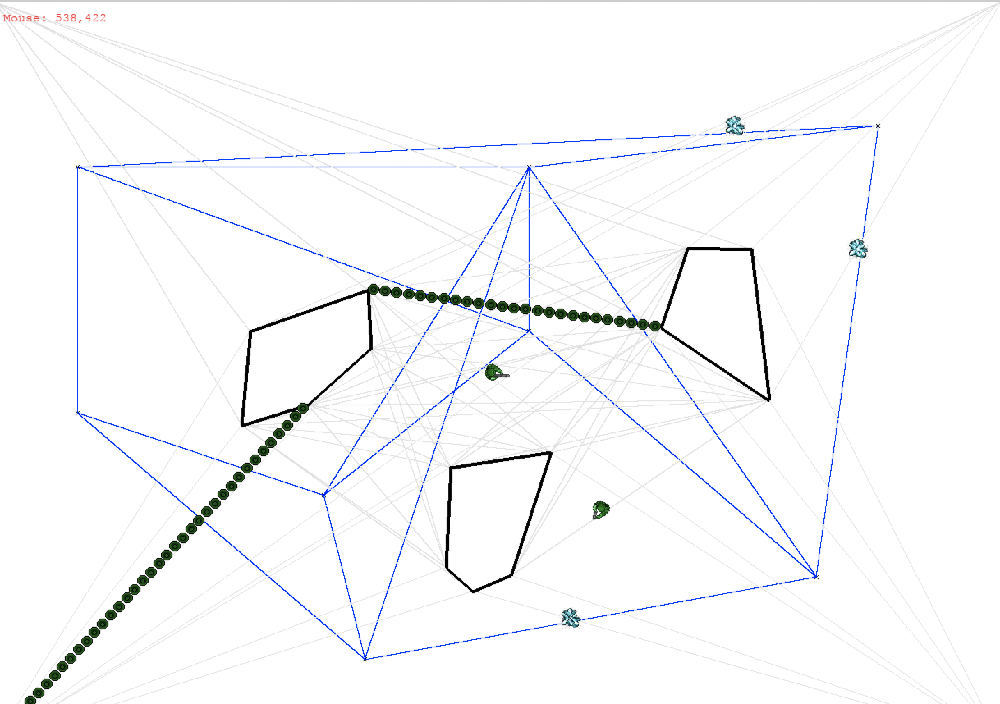

One of the main uses of artificial intelligence in games is to perform path planning, the search for a sequence of movements through the virtual environment that gets an agent from one location to another without running into any obstacles.
We now turn to the problem of dynamic obstacles. When there are dynamic obstacles, the path must be found in real-time every time the agent wishes to move because we don't know if prior solutions are still valid. It is also possible for the environment to change while the agent is moving making the currently followed path obsolete. Thus, an agent in a dynamic environment must be able to re-plan at a moment's notice. Because paths must be found in real-time, algorithm speed is very important.
One of the most commonly used pathfinding algorithms for computer games is A*. With an admissible heuristic, A* provides nice guarantees about optimality—it will find the shortest path—and keep the amount of unnecessary search to a minimum.
We will have an agent play a game in which it must collect as many of the resources in the environment is as little time as possible.
However, this time, the environment will be changing randomly as the agent attempts to gather resources. In this assignment, we will dynamically change the environment by spawning gates, which are walls that span between obstacles. Gates will randomly change positions over time. Note that sometimes the agent may simply become trapped and will have to wait for gates to move before proceeding.
In this assignment you will implement A* pathfinding to work on a navigation mesh in the dynamic gate-filled environment.
Please consult earlier assignments for background on the Game Engine. In addition to the information about the game engine provided there, the following are new elements you need to know about.
AStarNavigator2 is defined in astarnavigator2.py. AStarNavigator2 uses the A* algorithm to find a path from the Agent's current location to a desired destination, given a path network, and factoring in the possibility that any edge in the network may be blocked. If a path is found but dynamically becomes unfollowable, AStarNavigator2 will attempt to replan. If no valid path is found, the navigator will instruct the Agent to wait for one to open up.
Member functions:
GatedWorld is defined in core.py. A GatedWorld is a sub-class of GameWorld that has gates. Gates are walls that block the movement of Agents and move around randomly after regular intervals of time. There can be any number of gates. When the gates move, no gate will show up within 4.0 radiuses of an Agent. This means sometimes there are fewer than the maximum allowed gates.
If the user presses the 'g' key, a gate will appear in the nearest place to the cursor that a gate is allowed to appear. Light gray lines indicate where gates can appear. This may cause another gate to disappear if adding a gate exceeds the maximum number of gates allowed.
Member functions:
To complete this assignment, you must the A* algorithm for a path network built on top of a path network. You must additionally implement code that causes the Agent to re-plan its paths when a path become inviable, and to smooth the path whenever possible.
To run the project code, use runastarnavigator.py:
Additionally, there is a path network graph that does not invoke the game engine for testing purposes. See the Romania map. You can test your A* implementation by running:
> python runromania.pyThe following steps are required to complete the assignment.
Step 0: Copy your mybuildpathnetwork.py solution from the path network problem.
Here is how computePath() works in AStarNavigator. It first checks if there is a clear shot from the Agent's current position to the given destination. If so the agent is instructed to move directly to the destination. Otherwise, the agent looks for the closest path nodes to itself and the destination and uses these path nodes to index into the next matrix. It runs astar() to find the path. Once it has the path, it tries to optimize it. After all of that, if the path is not empty, the first node in the path is popped and the Agent is instructed to start moving to this node.
Step 1: Implement astar() in astarnavigator.py. Given a pathnetwork, create and return a path from the nearest path node to the Agent's current position to the nearest path node to the Agent's desired destination.
astar() takes in three values:
astar() returns a list of path nodes (points). If there is no path, return the empty list. Use shallow copies of path nodes so that the path nodes in the path correspond back to path nodes in self.pathnodes. astar() should also return the closed list, which is used to determine how many nodes had to be expanded during search.
You may want to test on the romania map first.
Step 2: Implement clearShot()
This function should return true if the agent can move from point p1 to point p2 without running into any obstacles. AStarNavigator.computePath() uses this to avoid having to generate a path when two points are within line of sight of each other and the agent could walk straight from p1 to p2 without colliding with anything. clearShot() takes in two points, a list of lines from obstacles (not including world borders), a list of points from obstacles, and the agent.
Step 3: Implement getOnPathNetwork()
The agent is probably not initially on the path network. The agent is probably not going to end exactly on a path node. For the agent's initial point (or any point), this function determines the nearest path node that the agent can get to that won't cause a collision. getOnPathNetwork takes a location (x1, y2) to check, a list of path nodes, the world lines (border lines around each obstacle plus each gate), and a reference to the agent object. You may find clearShot() helpful.
Step 4: Implement path re-planning. It is possible that since the Agent started following the path, that the environment has changed such that the path is blocked. Check whether the path is blocked and force the agent to re-plan.
There are two places where checking whether the path is still valid can be done:
Check to see whether the path is still valid; i.e., does not cross any gates. Gates are included in GatedWorld.getLines() and GatedWorld.getLinesWithoutBorders(). If the current path ceases to be traversable, create a new path. If there is no possible path, instruct the agent to stop moving.
You may wish to check to see if the entire path is still valid, or you may chose to only check to see if the next path node in the path (moveTarget) is still reachable by straight-line navigation. The former strategy allows the agent to replan sooner. The latter strategy maintains the same path up until the last minute.
For this step, it is very helpful to understand how the Agent works. In particular, the Agent already knows how to choose it's next target and invoke the navigator. Reading the code for how this works will make this step easier.
Step 5: Optimize the path that the Agent takes when traversing the path.
Modify shortcutPath(). This function takes the path generated by A* and attempts to shorten it by removing nodes that can be skipped by the agent. The function returns a path, which may or may not be the same as the path passed in. If there is a shortcut, meaning the agent does not need to visit all path nodes in the path, then the returned path should be shorter than the given path. shortcutPath() takes the folowing input parameters:
Modify mySmooth(). This function attempts to determine if shortcuts can be taken while the Agent is in motion. The Navigator object is passed in directly and it should modify the path by side-effect if necessary. The function returns true if the path has been dynamically modified, and false otherwise. mySmooth() works a little bit differently than other functions you've seen. The navigator object is passed in and you have access to all of its members. mySmooth may need to make an explicit call to Navigator.agent.moveToTarget() and may also need to directly modify Navigator.path. For example, if the agent can traverse directly to the destination despite having more nodes in the path, it may want to set the path to the empty list and instruct the agent to traverse directly to the destination point. As another example, if the agent can traverse directly to a path node that is not immediately next in the path, then it may choose to pop one or more nodes from the path.
The key difference between shortcutPath() and mySmooth() is that shortcutPath() happens at the time the path is created (before the agent has started moving) and thus probably only considers whether path nodes can be skipped by looking at each path node individually. mySmooth() is called every tick and can thus account for new information about whether the destination or future path nodes are reachable while the agent is part-way between path nodes.
6 points will be rewarded if astar() finds shortest path in all test cases with randomly broken edges in the path network. A* implementations will be awarded zero points if they perform an exhaustive search when it is possible to find a solution without conducting an exhaustive search.
1 point if agent moves directly between two points when there is line of sight (clearShot implemented).
1 point if getOnPathNetwork() successfully gets the agent onto the path network from any point in the map (one can assume that there is always at least one path node that is reachable from any point in the map).
1 point for shortcutPath() recognizing when the first or last node in the path computed by A* can be skipped.
1 point for mySmooth(), which will be tested by checking whether the total traveled distance by the agent is less than the upper bound if the agent were to touch every path node in the path computed by A*
The agent is of type NearestGatherer. Read NearestGatherer, and especially NearestGatherer.update(). You will see that NearestGatherer doesn't like to stop moving and continuously tries to get to the next target. If it stops moving it will attempt to start moving again. Look at what it does when it stops moving. Use Agent.stopMoving() to stop the agent.
Press 'g' near a gray line to force a gate to appear.
You can change the number of gates by editing the run*.py file. The fourth parameter to the GatedWorld constructor indicates the maximum number of gates that can be active at any one time. The fifth parameter to the GatedWorld constructor indicates the frequency (number of ticks) of gate movements.
Be sure to test your code with runromania.py, which uses a larger network but doesn't instantiate the graphical engine. The map is the Romania example from Russell and Norvig's Artificial Intelligence: A Modern Approach, Third Edition (pp. 68)
To submit your solution, upload astarnavigator2.py .
You should not modify any other files in the game engine.
DO NOT upload the entire game engine.